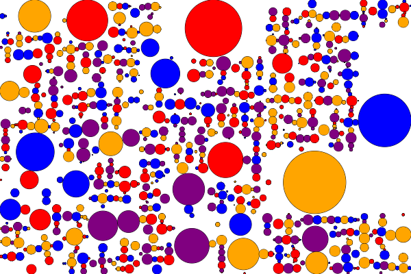
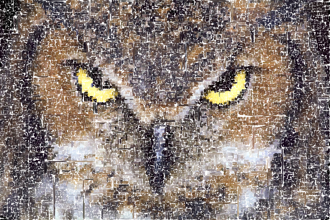
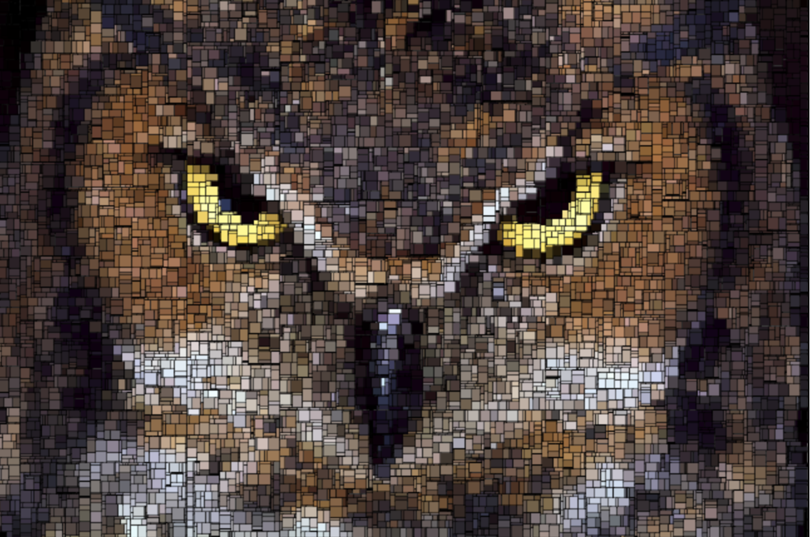
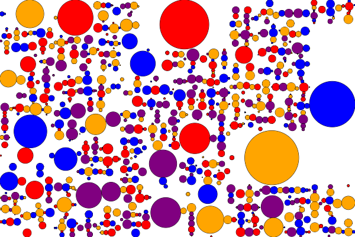
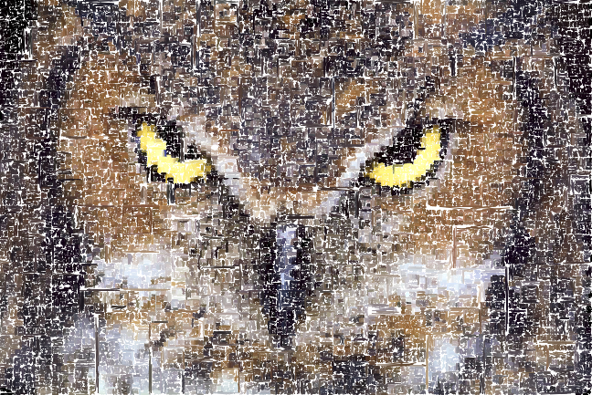
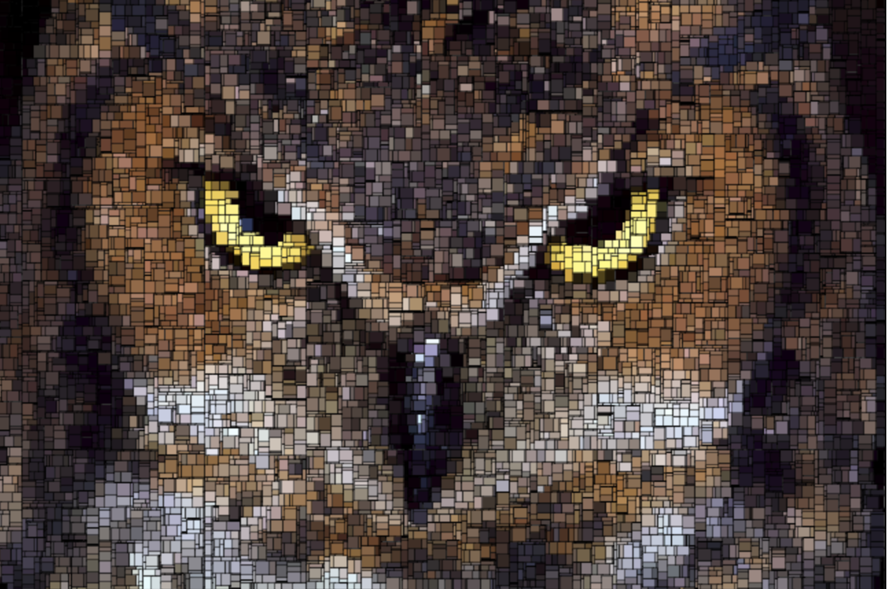

The Mondrian Grid is a way of making random shapes occur based on random lines being drawn and whether or not a smaller object should be formed inside of it. On the "Inside Circle" page, there was a line drawn randomly on the page, then if the canvas contained less then 50 pixels on either side, a circle was drawn, if it was both larger, than another line was drawn, and so on.